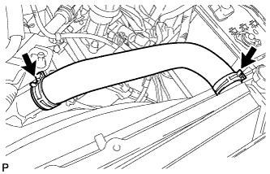
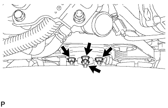
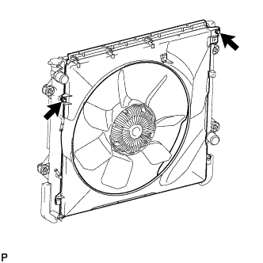
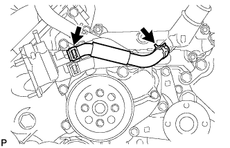
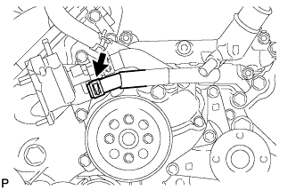
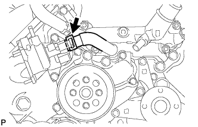
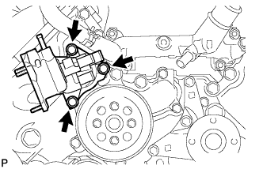
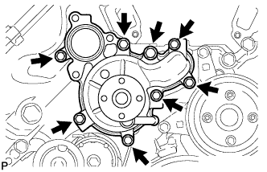

WATER PUMP > REMOVAL |
| 1. REMOVE WATER INLET SUB-ASSEMBLY WITH THERMOSTAT |
Remove the water inlet with thermostat (Click here).
| 2. REMOVE NO. 1 RADIATOR HOSE |
|  |
Remove the No. 1 radiator hose.
| 3. REMOVE FAN SHROUD |
|  |
Loosen the 4 nuts holding the fluid coupling.
Remove the fan and generator V-ribbed belt (Click here).
|  |
Remove the 2 bolts holding the fan shroud.
Remove the 4 nuts of the fluid coupling, and then remove the fan shroud together with the fluid coupling.
Remove the fan pulley from the water pump.
| 4. REMOVE NO. 1 WATER BY-PASS HOSE |
|  |
Remove the No. 1 water by-pass hose.
| 5. DISCONNECT NO. 8 WATER BY-PASS HOSE |
|  |
Disconnect the No. 8 water by-pass hose.
| 6. DISCONNECT NO. 5 WATER BY-PASS HOSE |
|  |
Disconnect the No. 5 water by-pass hose.
| 7. REMOVE WATER INLET HOUSING |
|  |
Remove the 3 bolts and water inlet housing.
Remove the gasket from the water pump.
| 8. REMOVE WATER PUMP PULLEY |
 |
Using SST, hold the water pump pulley.
Remove the 4 bolts and water pump pulley.
| 9. REMOVE WATER PUMP ASSEMBLY |
|  |
Remove the 8 bolts, water pump and gasket.